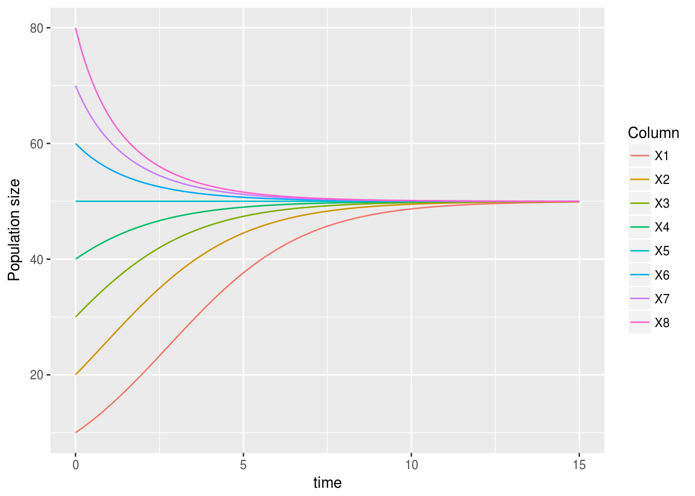
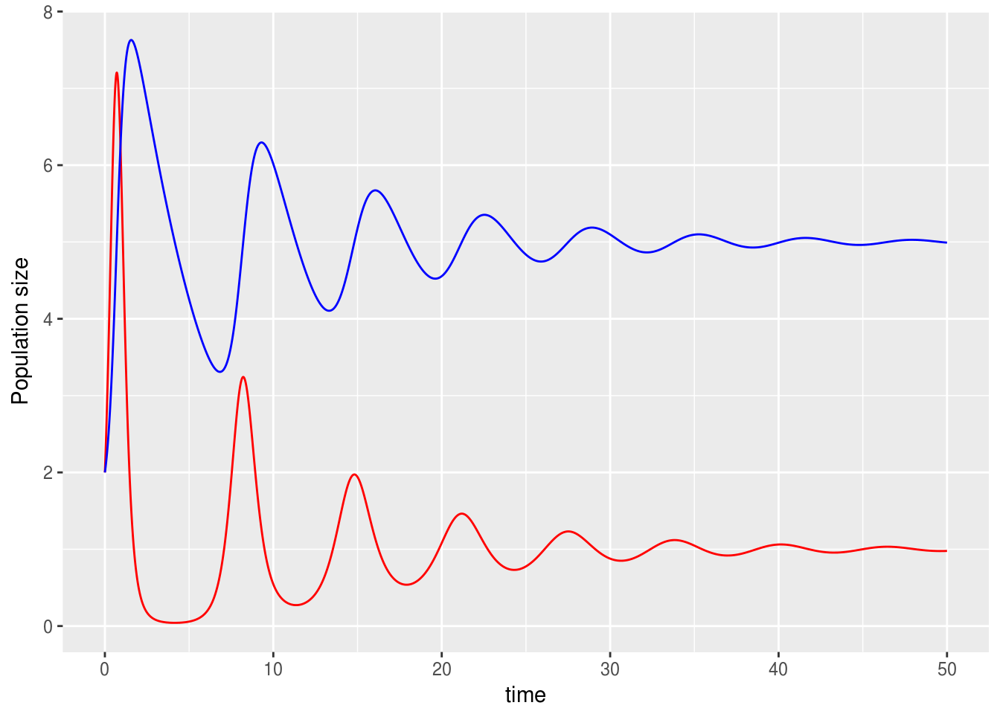
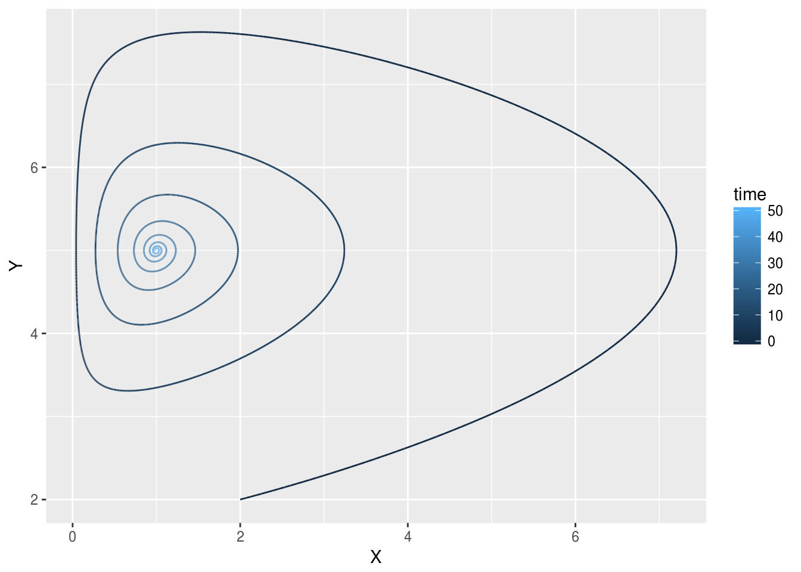
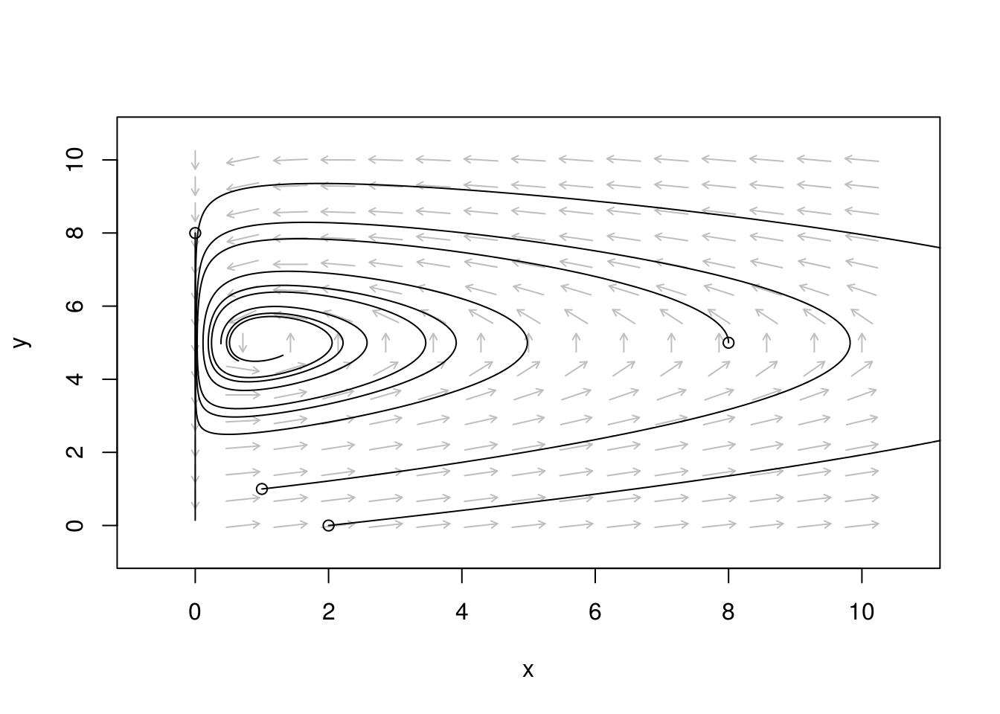

Population models in 2 dimensions
Madeleine Bonsma-Fisher
Lesson preamble
Learning objectives
- Review numerically solving differential equations
- Calculate and plot solutions with multiple initial conditions
- Numerically solve two-dimensional models in R
- Phase portraits of two-dimensional systems
- Find fixed points for one-dimensional systems analytically (time permitting)
Lesson outline
Total lesson time: 2 hours
- Review drawing phase portraits and numerically solving equations in one dimension (10 min)
- Numerical solutions with multiple initial conditions (15 min)
- Qualitative analysis of two-dimensional models
- Numerical solutions for two-dimensional models (15 min)
- Phase portraits of two-dimensional systems by hand (20 min)
- Using
phaseRto create phase portraits in R (40 min)- Finding fixed points analytically in one dimension (20 min)
Setup
install.packages('phaseR')install.packages('deSolve')install.packages('ggplot2')(ortidyverse)install.packages('dplyr')(ortidyverse)install.packages('tidyr')(ortidyverse)
Recap from last week
Drawing phase portraits in one dimension:
- Fixed points: values of \(N\) at which \(\frac{dN}{dt}\), the rate of change of \(N\), is \(0\). To find fixed points, plot \(\frac{dN}{dt}\) vs. \(N\) and find the place(s) where it crosses the \(x\) axis (\(y = 0\)).
- Stability: if you start at some \(N\) close to the fixed point but not exactly on it, will you go towards (stable) or away (unstable) from the fixed point? The sign of \(\frac{dN}{dt}\) on either side of a fixed point tells you whether \(N\) will increase or decrease in that area. Draw an arrow to the right if \(\frac{dN}{dt}\) is positive, and draw an arrow to the left if \(\frac{dN}{dt}\) is negative.
Numerically solving differential equations in R: starting from an initial population size, calculate a sequence of population sizes using the information contained in the differential equation. The result is a trajectory of \(N\) vs. time.
- Euler’s method: starting from \(N_0\), find the rate of change of \(N\) given by \(\frac{dN}{dt}\) evaluated at \(N_0\). Approximate \(N_{0 + \Delta t}\) using the following expression:
\[N_{t+\Delta t} \approx N_t + \frac{dN}{dt} \Delta t\] Use a
forloop in R to calculate a series of \(N\) at times of interest \(t\).- Using R’s ODE-solver
ode: define a function that calculates \(\frac{dN}{dt}\) for your model, making sure that it’s in the correct format with argumentst,state, andparameters. Call the functionodeand give it the parametersy = state, times = times, func = logistic_fn, parms = parameters
Finding numerical solutions with multiple initial conditions
Let’s make a pretty plot of numerical solutions for the logistic equation from a few different starting points.
# define function to be in the format that `ode` uses
logistic_fn <- function(t, state, parameters) {
# Calculates dN/dt for the logistic equation
# t: time point at which to evaluate derivative
# state: vector of variables (here it's just N)
# parameters: vector of model parameters c(r, K)
N <- state
r <- parameters['r'] # get the element labelled 'r'
K <- parameters['K'] # get the element labelled 'K'
#rate of change
dN <- r * N * (1 - N / K)
#return rate of change
return(list(c(dN)))
}# Run ode
library(dplyr)
library(tidyr)
library(deSolve)
# define parameters for the ode function
parameters <- c(r = 0.5, K = 50)
initial_conditions <- seq(10, 80, by = 10)
times <- seq(0, 15, by = 0.01)
# run ode inside a loop to calculate trajectories for several initial conditions
results <- data_frame(initial_conditions = seq(10, 80, by = 10)) %>% # CTRL-shift-m to make pipe
# 'do' is a dplyr function that returns a dataframe after doing a series of computations.
# once the results are in a data frame, everything we've learned about ggplot and dplyr can be used!
do(data.frame( # 'data.frame' converts the output of 'ode' to a dataframe
ode(
y = initial_conditions, # each time the 'do' loop runs, a new initial condition will be used
times = times,
func = logistic_fn,
parms = parameters
)
))
# display the first few rows of the results
head(results) ## time X1 X2 X3 X4 X5 X6 X7 X8
## 1 0.00 10.00000 20.00000 30.00000 40.00000 50 60.00000 70.00000 80.00000
## 2 0.01 10.04006 20.06003 30.05997 40.03994 50 59.94021 69.86063 79.76131
## 3 0.02 10.08024 20.12012 30.11988 40.07976 50 59.88083 69.72250 79.52522
## 4 0.03 10.12054 20.18027 30.17973 40.11946 50 59.82187 69.58560 79.29169
## 5 0.04 10.16096 20.24047 30.23951 40.15904 50 59.76332 69.44992 79.06069
## 6 0.05 10.20150 20.30074 30.29924 40.19850 50 59.70517 69.31544 78.83217This is exactly what we wanted. We have chosen a set of initial conditions (seq(10, 80, by = 10)) and created a dataframe that has one column of times (time) and a column for each trajectory resulting from each initial condition (X1, X2, …). Now we can use ggplot to plot all the trajectories.
# make a plot
library(ggplot2)
results %>%
gather(Column, Value, -time) %>%
ggplot(aes(x = time, y = Value, color = Column)) +
geom_line(aes(x = time, y = Value)) +
labs(y = "Population size")
This plot very nicely summarizes the behaviour of the logistic equation: it shows the path that the population size \(N\) will take in time from several initial conditions. Importantly, the carrying capacity \(K\) which we set to be \(50\) is clearly a stable fixed point: all the trajectories go towards \(K\).
Challenge
Modify the plotting code above so that the legend lists the initial conditions for each line instead of X1, X2, etc.
Qualitative analysis of 2D models
Now we’ll move on to look at how to analyze two-dimensional models. Two-dimensional means that there are now two variables in the system (like \(x\) and \(y\), prey and predators) instead of one (like \(N\)).
Many of the concepts and tools from analyzing one-dimensional models will be used here as well, but we will add some things that are specific to more than one dimension.
To motivate some of these new concepts and the idea of modelling in two dimensions, let’s analyze a model of two species interacting.
\[\frac{dx}{dt} = ax - bxy\] \[\frac{dy}{dt} = cx - dy\]
This is very close to the Lotka-Volterra predator-prey model, but the term for predator growth is \(cx\) instead of \(cxy\). In this model the predators will eat the prey at a constant rate, no matter how many of the predators there are. Make sure you don’t use these exact equations when you do the assignment!
First, we’ll simulate a trajectory for the two species.
predator_prey <- function(t, y, parameters) {
# calculates dx/dt and dy/dt for a predator-prey model
# t: time at which to evaluate derivatives
# y: vector of system variables (c(X, Y))
# parameters: vector of model parameters (c(a, b, c, d))
# the arguments need to be named "t", "y", and "parameters", otherwise this won't work with phaseR, a package we will use later
#now the state vector y has two elements because we have two species
X <- y[1] # prey
Y <- y[2] # predators
a <- parameters['a']
b <- parameters['b']
c <- parameters['c']
d <- parameters['d']
# calculate rate of change
dx <- a * X - b * Y * X
dy <- c * X - d * Y
# return rate of change
return(list(c(dx, dy)))
}# run the numerical solution
parameters = c(a = 5, b = 1, c = 1, d = 0.2) # parameters named so that we can access them by name
state <- c(X = 2, Y = 2) # same thing here
times <- seq(0, 50, by = 0.01)
result <- ode(y = state, times = times, func = predator_prey, parms = parameters)
result <- data.frame(result)# plot the results
result %>%
ggplot() +
geom_line(aes(x = time, y = X), color = 'red') +
geom_line(aes(x = time, y = Y), color = 'blue') +
labs(y = "Population size")
It looks like we have oscillations that decay to a fixed point. Notice that the prey population (in red) dips below \(1\) during each oscillation. If this was a real population, the prey would have gone extinct on the first dip below \(1\). This means that the parameters we’ve chosen aren’t very realistic. We could instead choose parameters that would change the fixed points to real-world population sizes.
Challenge
Modify the plotting code above to include a legend distinguishing ‘predators’ and ‘prey’. Feel free to look up a solution online.
A note on using Euler’s method to solve higher-dimensional systems
Note: if you are using Euler’s method to solve a two-dimensional system, make sure you calculate the rates of change using the variables from the previous time step. For example, in the predator-prey model, both \(\Delta x\) and \(\Delta y\) depend on \(x\) and \(y\), and it’s important that you calculate \(\Delta x\) and \(\Delta y\) before updating the values of \(x\) and \(y\).
Here’s an example.
# Define predator-prey equations
dX_dt <- function(X, Y, a, b) {
# X: number of prey
# Y: number of predators
# a: growth rate of prey
# b: rate at which predators eat prey
return(a * X - b * Y * X)
}
dY_dt <- function(X, Y, c, d) {
# X: number of prey
# Y: number of predators
# c: growth rate of predators from eating prey
# d: death rate for predators
return (c * X - d * Y)
}# parameters
a <- 5
b <- 1
c <- 1
d <- 0.2
state <- c(X = 2, Y = 2)
dt <- 0.01 # timestep - the smaller, the better
tmax <- 30 # the total time we want to numerically solve for
points <- tmax/dt # the number of data points in the simulation - add 1 so that we can start at t=0
# vectors to store values of X, Y, and t at each timestep:
X_vector <- numeric(points) # prey population size
Y_vector <- numeric(points) # predator population size
t_vector <- seq(0, tmax - dt, by = dt) # time vector
# initial condition
X0 <- 2
Y0 <- 2
X_vector[1] <- X0
Y_vector[1] <- Y0
X <- X0 # initialize variable X
Y <- Y0 # initialize variable YThis is the right way to do it.
for (i in 2:points) {
# start at 2 because the initial state is at position 1
# first calculate BOTH dX and dY
dX <- dX_dt(X = X, Y = Y, a = a, b = b) * dt
dY <- dY_dt(X = X, Y = Y, c = c, d = d) * dt
# now update BOTH X and Y
X <- X + dX
Y <- Y + dY
X_vector[i] <- X
Y_vector[i] <- Y
}This is the wrong way.
for (i in 2:points) {
# start at 2 because the initial state is at position 1
# calculate dX and then update X (wrong)
dX <- dX_dt(X = X, Y = Y, a = a, b = b) * dt
X < X + dX
# calculate dY and then update Y - this will use the new value of X instead of the old one.
dY <- dY_dt(X = X, Y = Y, c = c, d = d) * dt
Y <- Y + dY
X_vector[i] <- X
Y_vector[i] <- Y
}Phase portraits in two dimensions
Challenge
What were the axes of the one-dimensional phase portraits we drew? What would the axes of a phase portrait for the predator-prey system above be?
Continuing with the predator-prey example: instead of plotting our numerical trajectory as \(X\) and \(Y\) vs. \(t\), we’ll plot \(Y\) vs. \(X\): predator population size vs. prey population size.
ggplot(result) +
geom_path(aes(x = X, y = Y, color = time)) # geom_line connects the dots in the wrong way - try it out and see
A phase portrait in two dimensions has two axes: one for each of the variables in the system. Here, the two variables are \(X\) and \(Y\), prey and predators. We want to include the same information in this 2D phase portrait as in the 1D portrait: at minimum, we want to mark the fixed points and draw a vector field: arrows indicating in which direction the rate of change is for different values of \(X\) and \(Y\).
We can also add other information, and in the plot above we haven’t yet drawn arrows or fixed points, but we have drawn a trajectory - the dots trace out what happens to \(X\) and \(Y\) over time starting from \(X = 2\), \(Y = 2\). Time is no longer an axis in the plot, but it’s still there, hidden in the path that the populations take.
Comparing these two ways of plotting a trajectory, we can see that oscillations in time look like circular motion in the phase portrait. The GIF below illustrates this.

Predator-prey simulation
Drawing qualitative phase portraits by hand
Before we look at how to add more to phase portraits in R, let’s practice the process by hand to get familiar with it. Let’s use the following two-dimensional system as an example. The two state variables are \(x\) (position) and \(v\) (velocity), and this is a model of a mass attached to a spring. \(dx/dt\) is the rate of change of position, and \(dv/dt\) is the rate of change of velocity.
\[\frac{dx}{dt} = v\]
\[\frac{dv}{dt} = -\omega^2 x\]
We want to draw a vector field in two dimensions to show how the system will evolve through time. Our axes are \(x\) and \(v\). It doesn’t matter which one is the vertical axis and which one is horizontal, but let’s put \(x\) on the x-axis and \(v\) on the y-axis. These variables aren’t population sizes, so they can realistically be negative and non-integers.
Next, we choose some pairs of \(x\) and \(v\) and evaluate both \(dx/dt\) and \(dv/dt\), drawing an arrow at \((x,v)\) in the direction of the derivative. Let’s also set \(\omega = 1\) for convenience. Let’s start with \((0,0)\): both derivatives are 0, so there’s no arrow. For \((0,1)\), \(dx/dt = 1\) and \(dv/dt = 0\), so we draw an arrow pointing horizontally in the \(+x\) direction. Similarly for \((1,0)\). For \((1,1)\), we draw an arrow that goes \(1\) unit in the \(x\) direction and \(-1\) unit in the \(y\) direction. As we keep filling in this grid, we start to get a picture of how the system can behave for different starting points of \(x\) and \(v\).
This is analogous to plotting \(dN/dt\) vs. \(N\) and drawing arrows to the right where \(dN/dt\) is positive and arrows to the left when it’s negative, except that now we have to consider that the rate of change is affecting both variables at the same time.
Challenge
Define a function called mass_spring that uses the format required by ode to calculate and return \(dx/dt\) and \(dv/dt\). We will use this function later to plot a phase portrait in R. Remember that the arguments for your function must be called t, y, and parameters.
Using phaseR to draw phase portraits in R
phaseR is a package specifically for drawing phase portraits. It can automatically calculate and plot things like trajectories and vector fields.
Let’s plot a vector field and some trajectories for the predator-prey model.
# plot vector field: on a grid of points, plot an arrow in the direction of dx/dt and dy/dt
pp_flowField <- flowField(predator_prey, x.lim = c(0, 10), y.lim = c(0, 10),
parameters = c(a = 5, b = 1, c = 1, d = 0.2), # same parameters as before,
points = 15, # this is the density of grid points on which to plot arrows
system = 'two.dim', # 'two.dim' is default
add = FALSE)
# add trajectories
pp_trajectory <- trajectory(predator_prey,
# y0 is a matrix where each row is pairs of (X, Y)
y0 = matrix(c(1, 1, 8, 5, 2, 0, 0, 8), ncol = 2,
byrow = TRUE),
t.end = 20, # how far in time to calculate the trajectories
parameters = c(a = 5, b = 1, c = 1, d = 0.2), system = "two.dim")
## [1] "Note: colour has been reset as required"Challenge
Use phaseR and the function flowField to make a phase portrait for the mass-spring system of differential equations. You will need to use the function you wrote in the previous challenge. Is there a fixed point, and if so, where do you think it is?
Finding fixed points analytically (time permitting)
Up until now we’ve been plotting \(\frac{dN}{dt}\) vs. \(N\) to find the fixed points of a system. But we can also solve \(\frac{dN}{dt}\) \(=0\) analytically to find the fixed points. One advantage of finding the fixed points analytically is that you can see how the fixed points depend on the model parameters, whereas before we had to choose parameters in order to plot \(\frac{dN}{dt}\) and find the fixed points qualitatively.
\[\frac{dN}{dt} = rN(1-\frac{N}{K})\]
First, we set \(\frac{dN}{dt}\) \(=0\).
\[0 = rN(1-\frac{N}{K})\]
Next, we find all the values of \(N\) that satisfy this equation. If either \(rN = 0\) or \(1-\frac{N}{K} = 0\), the equation is satisfied. This means we have two fixed points, one at \(N = 0\) (since \(r \neq 0\)) and the other at \(N = K\). These are the same fixed points we found graphically last week. Notice that one of the fixed points depends on \(K\), but that neither of the fixed points depend on \(r\).
Challenge
Find the fixed point(s) of the following differential equation:
\[\frac{dx}{dt} = x^2 - 1\]
- First find the fixed points analytically on paper.
- Plot \(\frac{dx}{dt}\) vs. \(x\) for \(x\) ranging from \(-2\) to \(2\) in \(0.1\) increments.
- Sketch a phase portrait. Are the fixed point(s) stable or unstable?
Extras
Predator-prey simulation GIF in R
library(animation)
library(ggplot2)
library(grid)
library(gridExtra)
ani.options(interval = 0.00001)
parameters = c(a = 5, b = 1, c = 1, d = 0.2)
state <- c(X = 2, Y = 2)
times <- seq(0, 50, by = 0.01)
result <- ode(y = state, times = times, func = predator_prey, parms = parameters)
result <- data.frame(result)
saveGIF({
for (i in seq(1, length(result$time), by = 50)) {
result_i <- head(result, i)
p1 <- ggplot(result_i) +
geom_line(aes(x = result_i$time, y = result_i$X), color = 'red') +
geom_line(aes(x = result_i$time, y = result_i$Y), color = 'blue') +
ylim(0, 8) +
xlab("Time") +
ylab("Population size")
p2 <- ggplot(result_i) +
geom_path(aes(x = result_i$X, y = result_i$Y, color = result_i$time)) +
theme(legend.position="none") +
xlim(0, 8) +
ylim(0, 8) +
xlab("Prey population size X") +
ylab("Predator population size Y")
grid.arrange(p1, p2, ncol = 2, top = "Predator-prey model")
}
}, movie.name = "image/predator-prey.gif", ani.width = 900, ani.height = 600)This work is licensed under a Creative Commons Attribution 4.0 International License. See the licensing page for more details about copyright information.